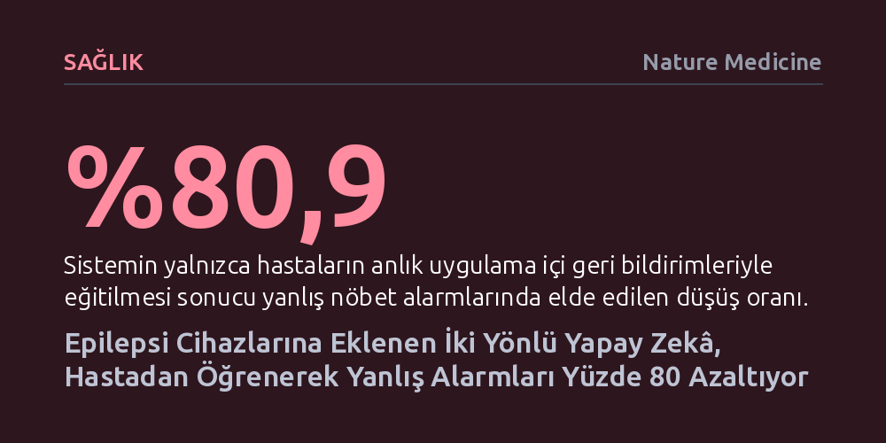

SAGLIK · Nature Medicine · 2026-10-14
Geliştirilen yeni iki yönlü platform, beyin sinyallerini büyük dil modelleriyle işleyip hastayla akıllı telefon üzerinden anlık iletişime geçiriyor. Klinik denemede sistem, yalnızca hastaların verdiği geri bildirimlerle nöbet tespit modellerini yeniden eğiterek yanlış alarm oranını yüzde 80 düşürdü.
Tıbbi cihazların hastayı yalnızca pasif bir veri kaynağı olarak görme devrini kapatıp, hastanın anlık deneyimini algoritmaları doğrudan iyileştiren aktif bir tedavi ortağına dönüştürüyor.

Dünyadaki 70 milyon epilepsi hastasının üçte birinden fazlası, en agresif ilaç tedavilerine rağmen nöbet geçirmeye devam ediyor. Cerrahi müdahaleler ancak belirli adaylara uygulanabiliyor ve bu hastaların da yalnızca yarısı iki yıl sonunda nöbetlerden tamamen kurtulabiliyor. Beyne yerleştirilen nörostimülasyon cihazları daha az invaziv bir alternatif sunsa da tam nöbetsizlik nadiren sağlanıyor. İlaç tedavisine yanıt veren çoğunluk için bile hayat kolay değil; uykusuzluk, unutulan tek bir doz ya da günlük stres gibi etkenler her an yeni bir nöbeti tetikleyebiliyor.
Günümüzde kullanılan onaylı tıbbi implantların en kritik eksikliği, yaklaşan nöbetleri veya risk artışını algılayabilmelerine rağmen bu bilgiyi hastayla gerçek zamanlı olarak paylaşamamalarıdır. Cihazlar topladıkları verileri belleğe kaydedip aylar sonraki hekim kontrolüne kadar sessiz kalıyor. Oysa hastanın hangi alışkanlıkların nöbeti tetiklediğini ya da koruyucu olduğunu anında öğrenmeye ihtiyacı var. Pennsylvania Üniversitesi öncülüğünde geliştirilen yeni platform, tıbbi cihazlar ile hastayı ilk kez gerçek zamanlı ve çift yönlü bir diyalogda buluşturarak bu iletişimsizliği ortadan kaldırıyor.
Geliştirilen altyapı üç bileşenden meydana geliyor: hastane ağından anlık elektroensefalografi (EEG) verilerini toplayan yazılım, bu sinyalleri güvenli bulut ortamında analiz eden katman ve hastanın kullandığı yapay zekâ destekli akıllı telefon uygulaması. Sistem; nöbet olasılığı, nöbetler arası diken dalgalar, uyku evreleri ve kandaki ilaç yükünü yansıtan nörofizyolojik biyoişaretçileri kesintisiz biçimde takip ediyor.
Platform hastaya iki ayrı yapay zekâ moduyla ulaşıyor. İlki duygu durumu, uyku kalitesi ve belirtilerin paylaşıldığı genel sohbet moduyken, ikincisi hastanın sorularına yanıt veren bir veri ajanı olarak çalışıyor. Hasta "Dün gece uykum nasıldı?" ya da "Bugün nöbet riskim var mı?" diye sorduğunda sistem, saniyeler içinde arka plandaki veritabanını sorgulayarak anlaşılır grafikler ve açıklamalar üretiyor. Genel sohbet yanıtları yaklaşık iki saniyede hastaya ulaşırken, karmaşık veri sorguları dahi ortalama dokuz saniyede ve yüzde 92 doğrulukla tamamlanıyor.
Epilepsi yönetiminde yapay zekânın karşılaştığı en büyük zorluk, kişiden kişiye değişen beyin sinyalleri nedeniyle algoritmaların yüksek oranda yanlış alarm üretmesidir. Sık çalan sahte alarmlar hastada bıkkınlık yaratarak teknolojinin güvenilirliğini zedeler. Araştırma ekibi bu sorunu aşmak için doktor onayını beklemek yerine, hastanın kendi gözlemlerini birer zayıf etiket olarak kullandı. Sistem yüksek nöbet riski saptadığında hastaya bildirim gönderdi; hastalar bu uyarıların üçte ikisinden fazlasını anında yanıtlayarak durumun gerçek bir nöbet mi yoksa sahte alarm mı olduğunu kaydetti.
Yalnızca bu hasta bildirimleriyle her üç saatte bir otomatik olarak güncellenen nöbet tespit modelleri, yanlış alarmları medyan yüzde 80,9 oranında azalttı ve F1 başarı puanını yüzde 158 artırdı. Üstelik bu iyileşme sağlanırken modelin gerçek nöbetleri yakalama hassasiyeti korunmaya devam etti. Şüpheli durumların hekim tarafından incelendiği döngüde insan senaryosunda ise yanlış alarmlardaki azalma yüzde 82,6'ya ulaştı. Bu sonuç, hastanın kendi deneyiminin makine öğrenmesi algoritmalarını doğrudan eğitebilecek güçte bir klinik veri kaynağı olduğunu kanıtlıyor.
Elde edilen çarpıcı sonuçlara karşın sistemin aşması gereken kısıtlar bulunuyor. Deneme, epilepsi izleme ünitesinde yatan 13 hasta üzerinde ve ortalama beş günlük sınırlı bir sürede gerçekleştirildi. Modelin iyileştirme sonrasında günde 2 ila 4 aralığına inen yanlış alarm sıklığı hastane şartlarında başarılı olsa da ev ortamındaki günlük yaşam için hâlâ azaltılmaya muhtaçtır. Ayrıca nöbet sonrası geçici hafıza kaybı yaşayan hastaların verebileceği hatalı yanıtların uzun vadeli etkileri, planlanan ayaktan hasta çalışmalarında değerlendirilmeyi bekliyor.
Buna rağmen çalışma, tıbbi cihaz teknolojisinde pasif izleme döneminin bittiğini gösteriyor. Hastayla konuşan, durumu anlaşılır kılan ve hastanın geri bildirimiyle kendini güncelleyen bu iki yönlü yapı yalnızca epilepsiyle sınırlı değil. Araştırmacılar aynı altyapıyı Parkinson hastalarında derin beyin stimülasyonu cihazlarının hassas ayarlanması için denemeye hazırlıyor. İnsülin pompalarından kalp pillerine kadar uzanan geniş bir yelpazede, hastayı tedavi sürecinin merkezine alan aktif bir yapay zekâ ortaklığı dönemi başlıyor.